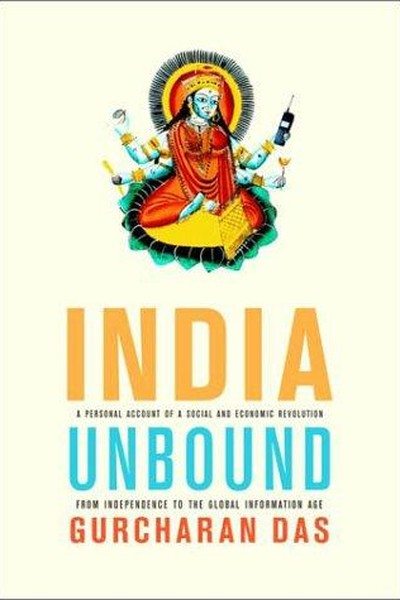

Library › Business & Startups
India Unbound — Summary & Key Lessons

Gurcharan Das's classic is part memoir, part economic history: the story of India's journe...
📖 OPEN THE FULL INTERACTIVE BREAKDOWN →🌐 Read it in Hindi, Hinglish, Gujarati, Tamil & 22 more languages — free, with audio.
💡 The Big Idea
Gurcharan Das's classic is part memoir, part economic history: the story of India's journey from independence through the socialist 'License Raj' to the 1991 liberalization that finally 'unbound' its economy. Das — a former CEO of Procter & Gamble India — writes from inside the system: the absurdity of getting a license to make shampoo, the moral corruption of scarcity, and the extraordinary release of energy when controls were lifted. His central argument: the Indian middle class and its entrepreneurs were always capable of prosperity; what bound them was policy. Free the market, and the market frees the people — the book is the definitive case for why economic freedom is a moral cause, not just an economic one.
🧠 The 6 Key Lessons
Lesson 1: The License Raj: When Bureaucracy Becomes the Business
Part 1: The Nehruvian Era
Das's opening chapters are a dark comedy of the License Raj: to make even simple products, companies needed government permits for production capacity, expansion, imports and pricing — and the permits became the real business. Executives spent more time with bureaucrats than with customers. The lesson is timeless: when permission becomes the scarce resource, the economy reorganizes around acquiring permission — corruption becomes rational, innovation becomes dangerous, and the brightest people become 'fixers' instead of builders. Every organization should audit itself for its internal License Raj: the approvals, sign-offs and processes that have become the product.
📖 Example: Das describes how P&G India had to apply for a license to produce a specific quantity of detergent, and any expansion required a new round of applications — while the actual market demand was irrelevant to the process. The permit was the bottleneck, not the… Read the full example →
⚡ Do this: Run an internal audit: list the top 5 approvals/processes in your work. Which ones exist to protect quality, and which have become self-serving bureaucracy? Cut or streamline one this month.
Lesson 2: The Moral Cost of Scarcity: Corruption Is a System, Not a Character Flaw
Part 2: The Failure
Das's most uncomfortable insight: when goods are scarce and licenses are discretionary, corruption becomes systemic — ordinary, decent people participate because it's the only way to function. The 'moral failure' framing misses the point: it's a structural failure. The fix is not more sermons but more supply and more competition. The modern translation: in any system where access is rationed by discretion (admissions, permits, deals), expect rent-seeking — and design around it. Reduce discretion, increase transparency, and let markets do the rationing. Character is shaped by structure; build structures that make honesty the easy path.
📖 Example: Das tells of waiting months for a phone line in the 1970s — unless you knew someone. The scarcity wasn't technical; it was systemic, and the 'corruption' was just the price of functioning in a rationed system. Read the full example →
⚡ Do this: Find one place where you hold discretionary power over others (approvals, allocations, access). Reduce your own discretion by publishing the criteria and following them mechanically.
Lesson 3: 1991: The Moment the Elephant Started Running
Part 3: The Liberalization
The book's turning point: the 1991 balance-of-payments crisis forced India to liberalize — devalue, dismantle licenses, open to trade — and the results were swift and spectacular. Das's eyewitness account shows how an economy that had crawled for forty years began to sprint within months: factories diversified, entrepreneurs emerged, and the middle class exploded. His lesson: constraints removed, capability explodes. The same people, the same land, the same skills — different rules, dramatically different results. For leaders: before blaming your team or market, examine the rules. The highest-leverage change is almost always regulatory — the removal of a constraint, not the addition of effort.
📖 Example: Das contrasts the pre-1991 era when entrepreneurs spent years getting licenses to start a business, with the post-1991 era when the same entrepreneurs built empires. The people didn't change; the permission structure did. Read the full example →
⚡ Do this: Identify the biggest constraint on your growth (a rule, a process, a fear-based policy). Treat its removal as a project with a deadline this quarter — and measure the result.
Lesson 4: The Middle Class Is the Engine: Consumption as Democracy
Part 4: The Rise
Das argues that the rise of India's middle class is not just an economic story but a moral one: when ordinary people can buy, build and choose, power decentralizes. The middle class's demand for better goods, better schools and better government becomes the pressure that reforms institutions. His portrait of the new Indian consumer — saving, aspiring, educating children — is an argument that consumption is not vulgar but liberating. The lesson for builders: serve the aspiring middle — in India or anywhere — and you ride the most powerful social force in modern history. The middle class votes with its wallet for a better country.
📖 Example: Das describes how the same families that once waited years for a scooter suddenly had choices — and the choice itself changed their relationship with the state. Aspiration, once unlocked, is not reversible. Read the full example →
⚡ Do this: If you serve customers, write a profile of the 'aspiring middle' customer — their dreams, constraints, daily life. Design one offer specifically for them this quarter.
Lesson 5: Globalization Is a Two-Way Street: Compete and Learn
Part 5: The Open Economy
Das's balanced take on globalization: it is neither a Western conspiracy nor a magic pill — it is exposure, and exposure is how you learn. Indian companies that faced global competition in the 1990s became world-class (software, auto parts); protected industries stayed mediocre. His lesson: competition is a curriculum. The pain of losing to a better competitor is tuition for becoming better yourself. The alternative — protection — is a warm room that quietly lowers your ceiling. For individuals: expose yourself to the best in your field, even if it stings; the sting is the upgrade.
📖 Example: Das shows how Indian auto component makers, terrified of global competition in the 1990s, became export champions within a decade — the fear of competition taught them quality, cost and speed that protection never could. Read the full example →
⚡ Do this: Identify the 'best in the world' in your field. Study one of their products/processes this week and list three things you can adopt or beat.
Lesson 6: The Rule of Law Is the Foundation: Contracts Before Charity
Part 6: The Future
Das's closing argument is the book's moral core: India's unfinished revolution is the rule of law — predictable courts, enforceable contracts, honest public institutions. He shows that every great civilization's prosperity rests on this invisible foundation: when people can trust that agreements will be honoured, they invest, build and grow; when they can't, they stay small and informal. The lesson for anyone building anything: institutionalize the rule of law in your own domain — written agreements, clear terms, honoured commitments — even when your environment doesn't demand it. Your reputation for keeping contracts is the cheapest capital you will ever raise.
📖 Example: Das contrasts the Indian builder who must bribe and hedge at every step with the same builder operating where contracts are sacred — the second builds ten times faster. The difference is not talent; it is the trust infrastructure. Read the full example →
⚡ Do this: Convert one handshake agreement into a written contract this month — even with a friend or family member. Treat the act itself as a habit, not an insult.
✅ 5-Step Action Plan
- Cut one self-serving approval/process from your work this month.
- Reduce your own discretionary power by publishing criteria.
- Treat the removal of your biggest constraint as a project with a deadline.
- Design one offer for the 'aspiring middle' customer.
- Convert one handshake deal into a written contract.
💬 Best Quotes from India Unbound
- “India was not poor because its people were lazy; it was poor because its policies were lazy.”
- “The same people, the same land, different rules — dramatically different results.”
- “The rule of law is the foundation on which every fortune is quietly built.”
Interactive version: mark lessons as read, listen in your language, share quote cards.